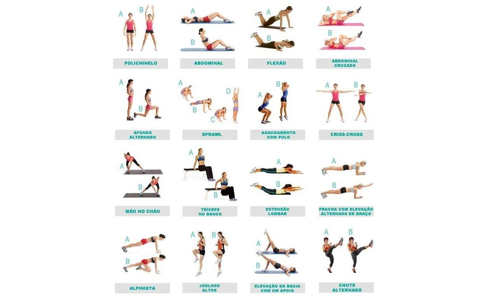

Saúde Física
Descubra como cuidar do seu corpo com exercícios práticos, alimentação equilibrada e hábitos que promovem vitalidade e energia.
Exercícios e Atividade Física
Movimente-se com exercícios simples que podem ser feitos em casa ou ao ar livre

Exercícios em Casa
Rotinas práticas que não precisam de equipamentos especiais.
Aquecimento (5 min)
- Polichinelos - 30 segundos
- Rotação de braços - 30 segundos
- Marcha no lugar - 30 segundos
- Alongamento dinâmico - 3 minutos
Treino Principal (15 min)
- Flexões (adaptadas) - 3x10
- Agachamentos - 3x15
- Prancha - 3x30s
- Abdominais - 3x15
- Burpees (adaptados) - 2x8
Relaxamento (5 min)
- Alongamento de pernas
- Alongamento de braços
- Respiração profunda
- Relaxamento muscular
Dicas Importantes
Frequência
Pratique pelo menos 3x por semana, com um dia de descanso entre os treinos.
Hidratação
Beba água antes, durante e após os exercícios para manter-se hidratado.
Escute seu Corpo
Pare se sentir dor. Desconforto é normal, dor não é.
Progressão
Aumente gradualmente a intensidade e duração dos exercícios.
Alimentação Saudável
Nutra seu corpo com escolhas inteligentes e saborosas
Princípios da Alimentação Equilibrada
Equilíbrio
Combine carboidratos, proteínas, gorduras boas, vitaminas e minerais em cada refeição.
Variedade
Inclua diferentes cores e tipos de alimentos para garantir todos os nutrientes.
Regularidade
Mantenha horários regulares para as refeições e evite pular refeições.
Hidratação
Beba pelo menos 2 litros de água por dia, distribuídos ao longo do dia.
Planejamento de Refeições
Café da Manhã
- Frutas frescas ou vitamina
- Cereais integrais ou aveia
- Proteína (ovos, iogurte, queijo)
- Bebida (água, chá, café sem açúcar)
Almoço
- Salada colorida
- Proteína magra (peixe, frango, leguminosas)
- Carboidrato integral (arroz, quinoa)
- Legumes cozidos ou refogados
Jantar
- Sopa de legumes ou salada
- Proteína leve
- Carboidrato em menor quantidade
- Chá relaxante
Lanches Saudáveis
Sono de Qualidade
Descanse bem para recuperar energia e manter a saúde em dia
Por que o Sono é Importante?
Função Cerebral
Melhora memória, concentração e tomada de decisões.
Sistema Imunológico
Fortalece as defesas do corpo contra doenças.
Saúde Cardiovascular
Regula pressão arterial e reduz riscos cardíacos.
Bem-estar Emocional
Melhora humor e reduz ansiedade e estresse.
Higiene do Sono
Horários Regulares
- Durma e acorde sempre no mesmo horário
- Mantenha a rotina mesmo nos fins de semana
- Evite sonecas longas durante o dia
Ambiente Ideal
- Quarto escuro, silencioso e fresco
- Colchão e travesseiros confortáveis
- Temperatura entre 18-22°C
Antes de Dormir
- Evite telas 1 hora antes de dormir
- Pratique atividades relaxantes
- Evite cafeína e refeições pesadas
Rotina Noturna Relaxante
Preparação
Desligue dispositivos eletrônicos e prepare o ambiente.
Higiene Pessoal
Banho morno, escovação dos dentes e cuidados pessoais.
Relaxamento
Leitura, meditação ou exercícios de respiração.
Sono
Deite-se e pratique técnicas de relaxamento muscular.
Comece sua transformação hoje!
Use nossas ferramentas práticas para acompanhar seu progresso na saúde física.
Acessar Ferramentas